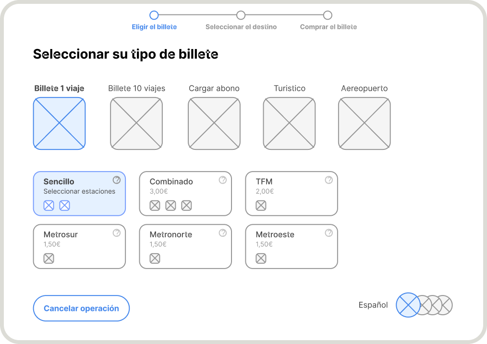
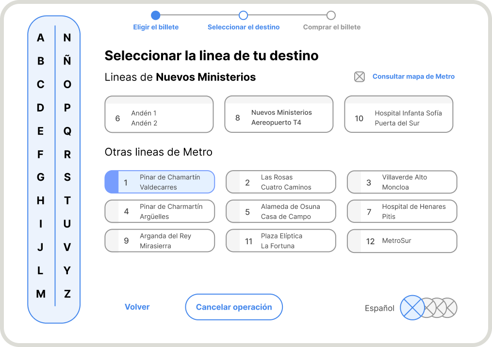
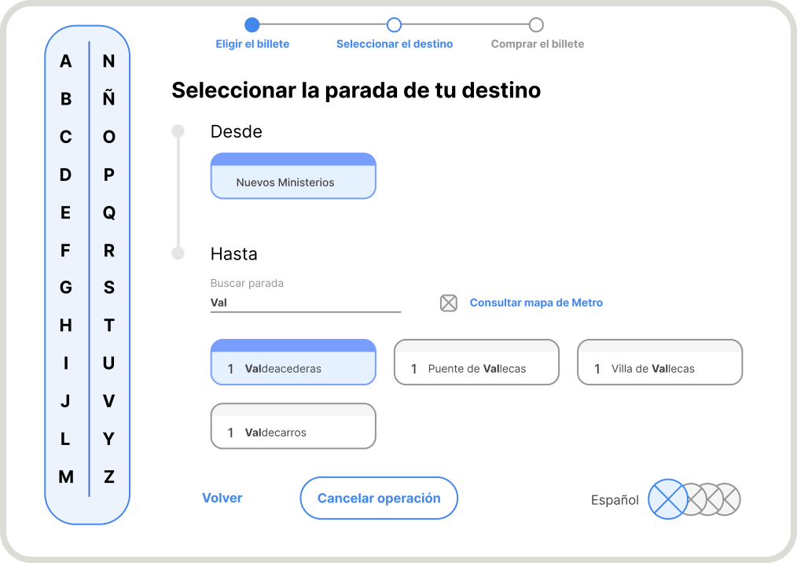
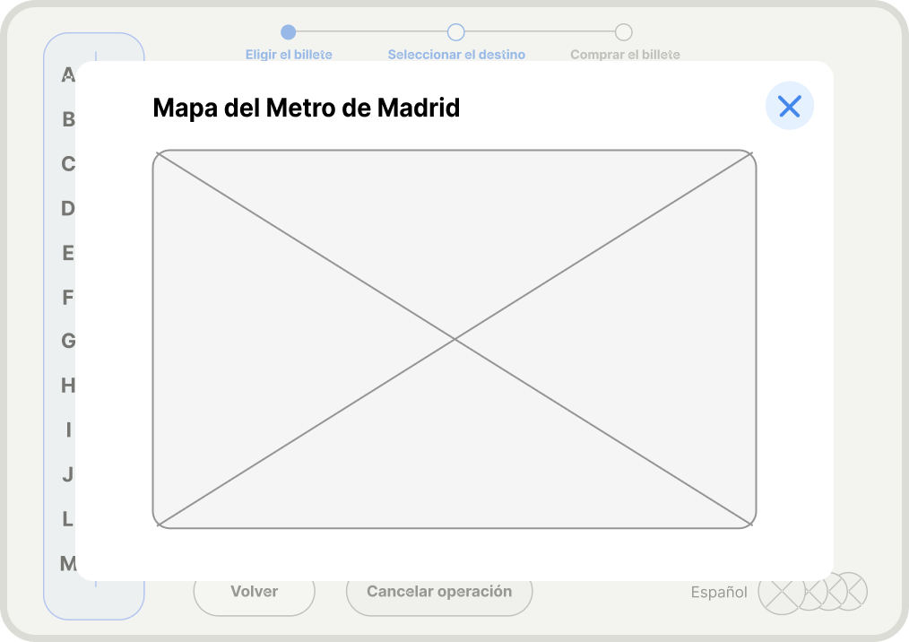
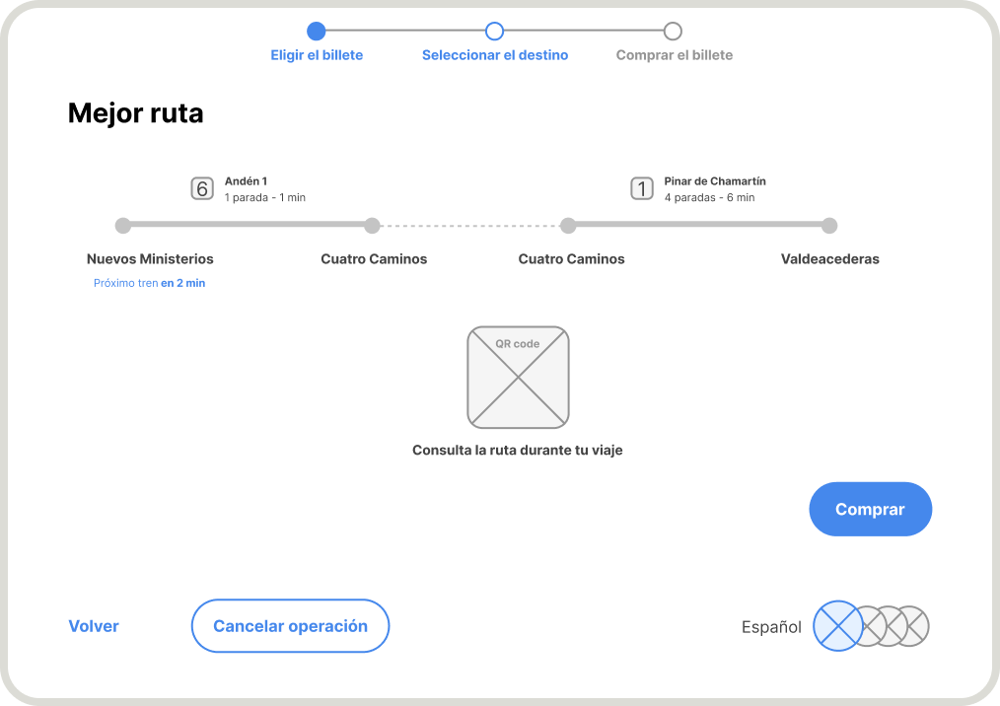
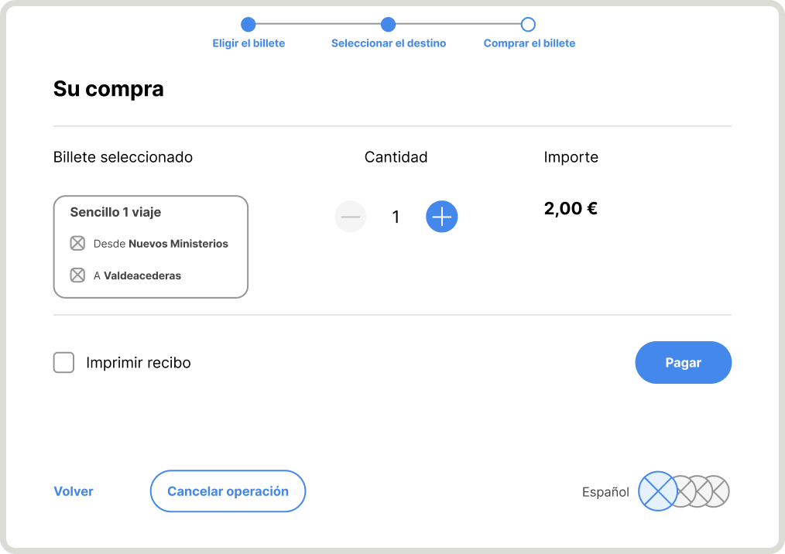
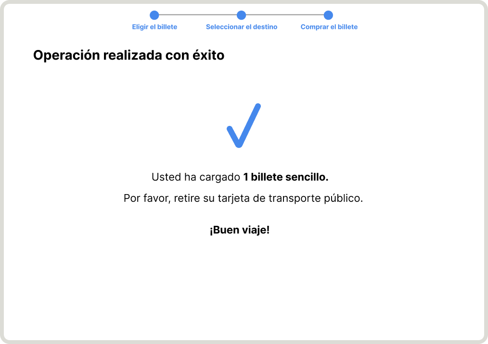

RESEARCH TO
IMPROVE THE USER
EXPERIENCE OF THE MADRID METRO MACHINE
The Madrid metro ticket dispensers are used every day by thousands of users, each with a different need,
but all of them
need an experience that is fast and very intuitive from the very first use.
Improved usability
There isn’t hierarchy of content in the visual of the screens. Some components look visually the same
even though they
behave differently. Much use is made of the colour red for text, and this may refer to an error
message.
Faster and smoother process
There isn’t filter or search engine to find the train stops. This slows down the search for users.
Closer to the user's needs
In the actualy experience, we cannot see at first glance all the types of tickets available to us.
Also we do not know
which types of public transport include combined tickets or 10-trip tickets.
Universal accessibility
Colour combinations are used that are not accessible to everyone
SOLUTION
SOLUTION
SOLUTION
SOLUTION
Ticket selection
Visibility
of
all the banknote types available to the user.
- More practical layout for selecting the different types of banknotes.
- Stepper to inform the user of the remaining steps to complete the operation.
- Information on how much each ticket costs and what is included in each ticket.
- Possibility of accessing more in-depth information on each type of ticket.

Line selection
Prioritise the lines of
the
station where the user is.
- Possibility of consulting the metro map.
- Better accessibility to facilitate the reading of the metro lines without depriving them of their
colours.
- More orderly blocks of lines.

Stop selection
Stop search engine for
better
usability when finding the destination.
- Two types of filters to find the desired stops more quickly.
- More visual location of the route, from the starting station to the destination.

Map of the metro
I have added this value
for
users who access the Madrid metro for the first time, such as tourists, or
for
users who, on
specific occasions, need to change their usual route.
- More practical location of all metro lines and stations.

Suggested best route
I have thought of a
service
that not only offers you to buy your metro ticket, but also accompanies you during the
journey.
- A service that is closer to the user's needs once the ticket has been purchased.
- QR code to consult the fastest route suggested by Metro at any time during the journey.

Confirmation of payment
More hierarchical
content to
facilitate a better understanding of the content.
The user can choose whether or not to print the receipt on the same screen, without having to wait until
the end of the
process.

Confirmation of process
Cleaner design with
iconography that reflects the successful completion of the operation.
Use of more neutral colours.

PROJECT
PROJECT
PROJECT
PROJECT
UX/UI PROJECT | ACCIONA
2022
Research and design of
Acciona's
new digital rental product